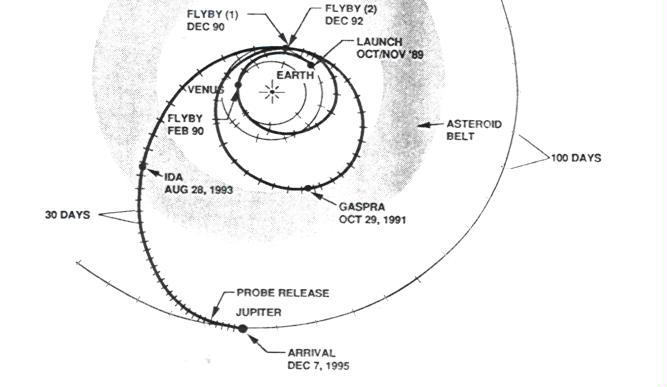

How to fly to Jupiter on a low budget using only gravity and
inertial
motion. The Galileo spacecraft was launched from the
space shuttle
in the Fall of 1989. Gravity pulls the spacecraft towards the
Sun,
but Galileo is aimed to intercept Venus in early 1990. The
gravity
of Venus acts like a slingshot boosting its speed and ability to
avoid
being pulled in more by the Sun's gravity. Galileo now has
enough
inertial motion and speed to return to Earth by December 1990.
As
in the case of Venus, Galileo is programmed to just miss the
Earth.
The Earth's gravity increases the speed of Galileo and furthers its
ability
to escape some of the Sun's gravitational attraction. It
orbits
the Sun in such a way that it passes the asteroid Gaspra in the Fall
of
1991 and then returns to the Earth again late 1992. Again it
just
misses the Earth and gets its final slingshot boost to head towards
Jupiter.
It passes the asteroid Ida in August 1993 and eventually reaches
Jupiter
in late 1995. A probe was released into Jupiter's atmosphere
and
the spacecraft orbited Jupiter taking many close up pictures of
Jupiter
and its moons.
Note that this incredible navigational feat is not possible
without
the radical shift in cosmology that took place in the 17th
century.
Scientists had to believe that planets were physical places just
like the
Earth, the universal force of gravity had to be deduced by Newton
from
Kepler's third law, and the counter-intuitive notion of inertial
motion
had to be discovered.